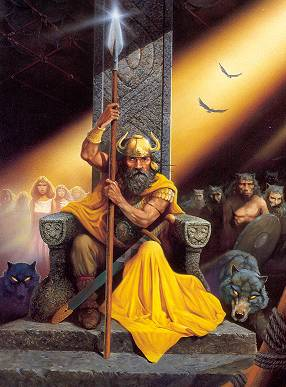

Forums galactiques > Assemblée Galactique : diplomatie officielle > Archives des présentations
| Capitaine Kirk Respect diplomatique : 7  23/01 ETU 20:07 | Score : 1 Détails Bonsoir à tous !
Après avoir emprunté un vortex lors d'une mission d'exploration, je me retrouve à la tête d'une planète qui a abrité l'équipage de l'USS Enterprise depuis quelques temps. Je présente donc les salutations d'usage et assure tous les Commandants de mes intentions louables. Je serai le porte-parole des territoires que je protège actuellement. Bonne aventure à tous ! | ||
| Improved Carnage Respect diplomatique : 33  23/01 ETU 20:21 | Score : 6 Détails Le commandant Improved Carnage s'approcha du centre de l'assemblée , en se gratant les couilles avec une main et de l'autre souleva ça bouteille ...
" Eh , salut les gars , moé chui improved carnage , "I.C" pour les intimes , ma passion c'est l'déboitage , les gonzesses , ma diplomatie , bof , les chochottes qui blablattent , pas trop mon tripe , la politique , le sénat et tout l'tralala , vous payez et vous aurez mon opinion . Voila , j'ai fini ma bouteille c'est tout pour aujourd'hui mon blabla a l'assemblée . " | ||
| Nvalth Respect diplomatique : 74  23/01 ETU 20:29  | Score : 1 Détails Le commandeur Nvalth était fière dans cette assemblée. Il avait réussi le voyage interdmiesnionnel, que son maître, Snakeshit, avait demandé de lui faire. Il avait cependant, subit une altération. en effet, son âme c'était déchirée, et une âme voulait la paix et la propserité, quand l'autre voulait le chaos et la guerre.
HRP : Cette fois-ci je serai plus expansionniste^^! | ||
| Tsu Respect diplomatique : 7 23/01 ETU 22:43 | Score : 0 Détails Un être entre et s?avance rapidement dans l?assemblée. Un être, du moins on pourrait le supposer. Cette cape noire ornée d?un masque blanc (comment ça je ne me renouvelle pas? ^^) qui avance et flotte étrangement n?a pas réellement l?air d?être quelqu?un. Bien que l?on conclue de ses manières que c?est un être plutôt agile et bien vivant, ses mouvements sont homogènes, comme s?il glissait sur le sol.
Une fois au centre de l?assemblée, il fait un tour sur lui-même, afin de repérer chaque être. On aurait presque dit une danse. Une main à l?apparence frêle s?échappe de la cape, se lève doucement, et fais un léger signe au commandant Be'lakor. Puis l?être cherche une place disponible dans l?assemblée. Il en trouve une assez éloignée des lumières et y part. Une fois arrivé, dos à l?assemblée, tête basse, il retire lentement son masque, laissant petit à petit des complaintes et des sons irréels s?en échapper. Il se tourne lentement, sa tête alors se redresse et dévoile à la ?foule? son visage. Deux formes offensantes remplacent ses yeux. Deux lumières pourpres qui paraissent se ravaler dans le néant qui compose le reste de son visage. L?attraction des lueurs vers l?intérieur de son corps que l?on suppose alors inexistant, émet une légère vibration à la fois sourde et crissante. Il remet ce masque simple, aussi les bruits se stoppent. Une présentation sans paroles. Laissant à chacun un avis propre sur qui il est, et sur ce qu?il compte représenter. Ne vous trompez pas, peut être qu?il n?a rien dit pour vous sauver. | ||
| Alcibiade Respect diplomatique : 35  24/01 ETU 01:25 | Score : 4 Détails Un jeune homme à demi-nu dans une tunique blanche fit son apparition dans l'Assemblée, il semblait aussi surpris que les commandants qui siégeait dans ce lieu magifique :
"Kairé, Excusez moi de mon impudence, mais qui êtes-vous. Je voguais stratège élu par Athènes la puissante vers la Sicile avec mes fières hoplites aux pieds légers quand soudain plus rien. Je me retrouve ici parmi vous, ou gignoskô ce que je fais dans ces lieux austères. Serait-ce l'âge d'or tant chanté par Hésiode, ou bien les Champs Elysées, mais dans ce cas, où sont les héros ? Où est le brave Hector ? Enfin, ou meta melei moi, je vais bien m'accomoder de ce nouvel univers plein de faste." Le jeune homme désorienté se dirigea vers un siège libre mais s'arrêta avant de s'asseoir : " Au fait, je suis Alcibiade, l'aimé de Socrate et de tous les nobles Athéniens, je ne sais pas ce qu'il se passe ici, mais soyez assuré que cette Assemblée sera mon lieu de villégiature Kairé". | ||
| Moche Respect diplomatique : 26  24/01 ETU 03:17 | Score : 8 Détails "Nous sommes le peuple des Moches, ne vous fiez pas a ce villain nom. Vous pourriez avoir à le regretter, le Moche de base est rabougri, raleur et taquin.
Mais lorsqu'il se présente à vous, ses dents dégoulinent de sang. Rassurez vous embassadeurs auprès de l'assemblée, en tant que diplomate je me doit de retenir ma faim Beurp...." conclut le représentant Moche à l'assemblée.. | ||
| sacha Respect diplomatique : 2 24/01 ETU 08:16 | Score : 2 Détails Les portes de l'assemblée s'ouvra , une jeune commandante s'avanca en direction du centre de l'assemblée . LA commandante demanda a prendre la parole au sein de l'assemblée .
Commandant , commandantes , Je me présente , la commandante sacha , je suis experte en commerce galactique et analyste en économie de marché . Pour ma part , ma position politique restera neutre , en temp que commercante , il est de mon devoir d'être impartiale vis a vis des clients . Pour toutes informations , vous pouvez me contacter par visio-intergalactique . Je vous remercie de m'avoir écoutée . | ||
| Squall Respect diplomatique : 51 24/01 ETU 10:21 | Score : 3 Détails Bonjour je m' apelle Squall.
Ce surnom me fut donné dès ma naissance, j' ignore pourquoi. Des textes de l' ancien monde donne ceci à squale (seul mot ressemblant au nom que m' ont donné mes parents): SQUALE: (on prononce scouale) Genre de poissons cartilagineux, allongés, vulgairement connus sous le nom de chiens de mer et dont le REQUIN BLANC est une espèce. Et requin blanc donne ca dans mes archives holographiques: REQUIN BLANC: Le grand requin blanc (nom scientifique : Carcharodon carcharias) est un requin EXCEPTIONNELEMENT GRAND. Il est LE PLUS GRAND poisson PREDATEUR qui vive dans la GALAXIE. Il est le seul survivant du genre Carcharodon. Sa durée de vie est estimée à 50 ans. J' ignore pourquoi mes parents m' ont affublé d' un nom de poisson disparut de l' Ancien Monde et je ne le saurais jamais ... je les ais tués de mes mains dès mon enfance. J' ai toujours été un incompris. Les psychiatres ont essayés de me comprendre et de m' étudier. J' ignore ce qu' ils ont pu comprendre ... meme sous la torture, les mutilations et les viols, ils me l' ont jamais dit (secret professionnel ?) Ma venue ici, est une bénédiction ... je devais etre traduit devant un tribunal pour des crimes soi disant ignobles selon mon "ex" avocat (lui aussi ne m' a rien dit, meme, en lui couper les doigts un par un avec mes dents) et ... pouf ... je sais pas pourquoi, je me retrouve à la tete d' une planète dans cette galaxie avec d' autres criminels devant etre jugé. Les voix qui me parlent, me disent que c' est ma destinée et ma chance. Je ne sais pas ... la dernière fois que ces voix m' ont parlé, j' ai massacré une galaxie entiere, hommes après hommes, femmes après femmes, enfants après enfants, bébés après bébés ... de mes mains et dans la joie (excepté les hurlements d' agonie de ceux que j' avais loupé ...). Mais ici, je vais repartir à zéro, saisir cette chance pour guérir, me soigner, arreter de tuer gratuitement, etre un homme bien, fonder une famille et etre bon. Ne me jugez pas sur mes meurtres, génocides, viols, massacres, vols, conspirations, euthanasies, apocalypses que j' ai fait dans mon ancienne vie, ici je serais un homme bien, démocrate et pasifi ... paciffiss ... paciphis ... paciffyst ... votre ami quoi. Je vous tendrais la main, ne la refusez pas, les voix qui parlent dans ma tete seraient fachées et pas contentes ... vous devez me comprendre, je suis malade (comme disaient mes "ex" médecins) mais je vais guérir et, je compte sur vous pour, car, le fait qu' un psychopate tueur en série paranoiaque à tendance sadique soit toujours en vie alors qu' il devait etre exécuter est bien la preuve que Dieu (et les voix qui me parle) me donne une seconde chance ? Je suis déjà impatient de vous connaitre tous, un par un, méthodiquement, les uns après les autres, planètes par planètes, système après système ... | ||
| Zygot Respect diplomatique : 33  24/01 ETU 11:00 | Score : 3 Détails *Une image floue apparait subitement dans le noir obscure qui règne dans la salle.
*Après quelques minutes, l'image reste floue... *Une personne se lève et donne un violent coup de pied au transmetteur : l'image devient enfin plus nette. Bonjour Mesdames, Messieurs et Autres. Je me nomme Zygot d'Obdivisian, commandant de la planète du Même Nom. Je viens à vous afin de trouver mon trouver mon idéal, traduisez m'enrichir (on est de la Guilde ou on ne l'est pas), et c'est pourquoi je me présente à vous. Puisse nos relations amicales, et bien sûr commerciales, être nombreuses, satisfaisants et enrichissantes. Que les sous-dieux Obdish, intérimaires engagés par Dieux pour déïser Obdivisian, soient avec vous. Je vous salue. *L'image redevient floue et le transmetteur fini enfin par exploser, paix à son âme. | ||
| Schtroumpfette Respect diplomatique : 24  24/01 ETU 12:22 | Score : 9 Détails Bonjour,
je suis la Schtroumpfette. Je viens du village schtroumpf, où j'habite dans un petit champignon schtroumpf entre celui du Grand Schtroumpf et celui du Schtroumpf poète. Le Grand Schtroumpf fait en ce moment une schtroumpf scientifique importante pour développer un schtroumpf qui fera pousser les champignons plus vite, j'ai donc été schtroumpfée par mon village pour le représenter ici. J'espère que nous pourrons schtroumpfer des idées de décoration, des schtroumpfs de cuisine et des potins ! Schtroumpfement, La Schtroumpfette | ||
| laska Respect diplomatique : 5  24/01 ETU 13:13 | Score : 1 Détails Commandants, permettez moi de me présenter je me nomme Laska je suis une jeune commandante arrivée depuis peu d?une autre galaxie. D?ailleurs j?ai constaté que je ne suis pas la seule à avoir profitée des failles spatio-temporel qui se sont produites récemment et qui nous ont permis de trouver cette galaxie.
Aujourd?hui une nouvelle vie commence pour moi comme pour beaucoup d?autre. Mais je ne suis pas venue seule les autres membres de la coalition que je représente ont décidés de venir aussi et nous accueillerons à bras ouvert les commandants de cette galaxie. Commandantes, commandant merci de m?avoir prêtés attention. | ||
| Esprit Divin Respect diplomatique : 0  24/01 ETU 16:21 | Score : 0 Détails Venant tout droit du royaume des Dieux, un esprit informateur de dieu apparut sur cette assemblée, pour voir comment les mortels ce débrouille. Il informera dieu de tout ce qui ce passera enfin a peut pret!
| ||
| Be'lakor Respect diplomatique : 132  24/01 ETU 16:54 | Score : 1 Détails Alors Dieu a eu les mêmes idées que les démons..
Nous verrons qui gagnera cette lutte ancestrale! | ||
| punk[ghost] Respect diplomatique : -66  24/01 ETU 17:13 | Score : -7 Détails je suis un des mercenaires tueur de totu les tyrans, les fous, et de lolita qui voudrait la paix ( c une fille de 4 ans).
| ||
| Sidden Respect diplomatique : 63  24/01 ETU 17:20 | Score : 2 Détails punk[ghost] ne connaît rien à la galaxie et la vie inter-sidérale... il ne faut pas lui en vouloir s'il a confondu lolita avec lui-même...
De plus il fait mauvaise impression à l'Assemblée... je doute qu'il gagne beaucoup d'alliés pour l'instant... Salutations. | ||
| punk[ghost] Respect diplomatique : -66 24/01 ETU 17:29 | Score : -7 Détails tt puisque ej suis dans les mercenaires.
alors j'ai un pote et j'ai le chef avec moi. | ||
| Sidden Respect diplomatique : 63 24/01 ETU 17:31 | Score : 2 Détails Et le chef il est puissant ? S'il est aussi mentalement débile que toi je pense qu'elle ne tiendra pas longtemps. L'Assemblée est tout juste ouverte qu'elle est déjà polluée par un Commandant du premier âge qui plus est ne devrait même pas être considéré tel quel...
| ||
| Deubeulekane Respect diplomatique : -10  24/01 ETU 17:33 | Score : 2 Détails Sidden ne t'emporte pas avec des futilité !
| ||
| punk[ghost] Respect diplomatique : -66 24/01 ETU 17:35 | Score : -4 Détails ............................
Au une shtroumphette. Lu ça vas? Je ne t'attaque pas si tu t'allies avec moi ok? | ||
| Elisiste Respect diplomatique : 12  24/01 ETU 17:36 | Score : 4 Détails La commandante Elisiste, dont personne n'avait remarqué la présence, se leva et prit parole :
"Chers commandants et commandantes, Je suis la fille d'un commandant qui pour punir mes actes me banit de ma galaxie natale et m'envoya ici.Peut-etre m'a-t-il déja oublier... mais le jour de ma vengeance viendra. Cela fait peu de temps que je suis parmis vous mais j'espère que vous saurez m'accueillir et aprécier ma personne. AD PERPETUAM REI MEMORIAM (A la mémoire éternelle du fait)" Sur ces brefs paroles la commandante salua l'Assemblée et retourna s'assoir . |
Forums galactiques > Assemblée Galactique : diplomatie officielle > Archives des présentations